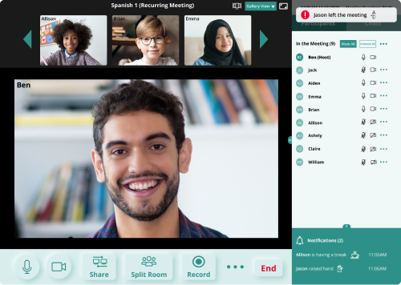

ConnectEd
ConnectEd is a videoconferencing platform where you teach and learn a language with ease.
VIEW INVISION PROTOTYPEROLES
- UX Research
- UI Design
- Brand & Identity
- Testing
DELIVERABLES
- User Surveys
- Competitive Analysis
- User Personas
- User Stories & Flow
- Paper Prototype
- Wire-Frames
- Concept & Identity
- User Testing
- Hi-fi Prototype
SPECIFICATION
Team
- Individual Project
Duration
- 6 weeks
Tools
- Figma
- InVision
- Usability Hub
Overview
Overview
What is ConnectEd?
Although online education is not a new concept, people have begun to need and use it more recently. A robust and agile platform for synchronous instruction can support a smooth transition online for educators and learners.
ConnectEd is a videoconferencing platform that helps foreign language instructors to deliver content online and easily handle routine logistic and administrative functions of online teaching.
Problem
The Challenge.
As online education has become particularly salient due to the pandemic, teachers have encountered multiple logistical challenges as they transition online. Throughout the discovery phase, I found that online instruction has brought immense challenges to prompt attendance-taking, group work supervision, and effective communication.
Solution
Consider each task.
Our goal is to fully consider each task and step that language teachers need to fulfill during online instruction. The solution's seating chart view with students' attendance status provides more straightforward and accurate information. The breakout room monitor allows teachers to supervise group activities more efficiently, while the improved reminder/notification system ensures smoother communication between all course participants.
Discovery Phase
User Survey
Get to know our users.
I began with a user survey and sent it out to my foreign language educator connections. 24 valid responses were gathered. The results help me learn about when language teachers conduct online instruction via a video conferencing platform, what the most frequently used features are, what primary challenges they are facing, and what new features or improvements they want.
VIEW SURVEY QUESTIONSKey Discoveries - Stats
- 50% of respondents spend more than 10 synchronous hours per week online with all their classes.
- 100% of respondents use Zoom for synchronous instruction.
- 67% of respondents use Zoom because it is required by employers.
- 58% of respondents call on individual students, compare usage reports with the roster or rely on memory to take attendance.
- 50% of respondents share the screen during synchronous online instruction all the time.
- 50% of respondents expect to monitor all breakout rooms simultaneously.
Key Discoveries - Input
- Almost all respondents would like to monitor all breakout rooms simultaneously.
- Most respondents want a seating chart view mode with all meeting participants’ attendance statuses.
- Problems such as students ignoring the messages sent to breakout rooms and teachers being unable to review previous notifications regarding who raised their hands, who left the meeting, etc. were frequently mentioned.
Based on the survey results, it was clear that language teachers need a more efficient and easy-to-use online instructional platform that empowers regular instructional and more logistic and administrative activities. With these discoveries, I moved forward and collected further feedback through user interviews.
User Personas
Held accountable by users.
I conducted 3 user interviews with more in-depth questions to better understand the user’s motivations and frustrations.
Ben Crowford
Spanish Teacher
Age: 25 / Location: Houston, TX / Gender: Male
Goals
- To have a better reminder system that assists teacher-student interactions.
- To access a concise and clear user login and in-meeting reports for efficient attendance-taking.
- To know who raises hands/leaves the meeting immediately when it happens and to keep track of these notifications afterwards.
Frustrations
- Some of the teacher-student communication features are inefficient or inconvenient.
- Attendance taking is time consuming, and the usage reports are confusing.
- There is no notification log to follow up.
"I will appreciate a more intelligent online instructional platform that humanizes the whole process of teaching."
Alice Wang
Mandarin Teacher
Age: 32 / Location: Sunnyvale, CA / Gender: Female
Goals
- Alice likes the “One Click for All” features, such as a button of “Allow all to Record”.
- She wants to better communicate with her students when they are in the breakout rooms.
- She is eager to monitor all breakout rooms simultaneously.
Frustrations
- Some of the frequently-used features are difficult to use.
- Messages sent to the breakout room are easily overlooked by students.
- Alice has to enter and exit each breakout room to check on progress; this is very inefficient.
"I need a platform to more effectively supervise and support students’ communication in the group setting."
Chelsie Lee
Mandarin Teacher
Age: 42 / Location: San Jose, CA / Gender: Female
Goals
- Minimum efforts or training to learn how to use the instructional tool.
- A tailored plan for private lessons with freedom to choose personal features is preferred.
- One platform that meets her needs with a decent price will make her a loyal user.
Frustrations
- Some of the online instructional platform lacks basic functions while others have a steep learning curve;
- The platforms with necessary features only offer a free plan with very limited meeting time.
- The pricey plans with enough meeting time contain too many unnecessary features. She is tired of switching between platforms.
"A more tailored, flexible and price friendly plan which allows me to personalize my needs will help users like me."
Competitive Analysis
What are competitiors doing?
Scrutinizing the competitors’ major user flows and features helped me decide on the optimal experience for my potential users. Among the popular video conferencing companies, Zoom's software usage saw a significant global increase following the introduction of quarantine measures adopted in response to the pandemic. Google Meet is backed up by the powerful Google Workplace, used by 120 million students and educators worldwide to create, collaborate, and communicate, despite school closures. Based on the 3 primary problems identified earlier, I focused on how well Zoom and Google Meet help users manage attendance-taking, breakout room tasks, and reminders/notifications.
Weakness
- There is no breakout room monitor.
- It provides limited attendance-taking assistance. Hosts have to go through the tedious usage report.
- There is no notification log to follow up. Broadcast message to the breakout room is easily overlooked, and it cannot be retrieved for follow-up.
Strength
- There are sufficient breakout room functions (recording, asking for help, etc.).
- Pop-up reminders of who raised hands, who left the meeting, etc. are very helpful.
- It provides convenient built-in communication methods (reactions, raise hand, etc.).
Weakness
- There are limited breakout room functions (no messaging, no recording, etc.).
- Attendance report is only available after the meeting; the information from the attendance report is not straightforward.
- Users need to install several extensions to access many features.
Strength
- It automatically sends hosts the detailed usage report.
- Pop-up reminders of who raised hands, who left the meeting, etc. stay on-screen long than in Zoom.
- It takes fewer steps to switch between different breakout rooms compared to Zoom.
Brand & Identity
Conceptual Ideation
Connect educators and learners.
Now we have a more clear image of what kind of product we are trying to build and what we can offer users to solve their problems. Bearing the users' needs in mind, I developed the initial concepts for this brand.
-
SpeakUp - To stress the communication focus. - LingoMeet - To emphasize this is a language education platform.
- EasyClass - Learn as in a real classroom with ease and efficiency.
I had other thoughts, but, among them, the concept of “ConnectEd” ultimately won out, as it clearly
conveys our goal, which is not only to create a connection between a language teacher and a student,
but also to help bridge different cultures and embrace diversity.
Logo Design
Learn a new language. Encourage a growth mindset.
I wanted the logo to reflect its educational purposes while still being inspiring. To help users quickly grasp the core value of ConnectEd, I developed a slogan of “Learn a new language, embrace new cultures, encourage a growth mindset, and be a life-long learner!
- Some of my initial logo concepts were:
- A bridge - To emphasize the connection.
- A bulb - To stress the idea of “enlightenment.”
- A screen - To simply indicate the online learning platform.
- Letters infusing the letters “C” and “E” - Abbreviation of ConnectEd.

The tree-like logo eventually won over all the other options for its conciseness and straightforwardness. Two letters of “E” are embedded within the tree to indicate the nature of our product - an educational platform. Also, we created a tree symbol as it represents personal growth and spiritual nourishment, hearkening to its educational purposes.
Color
We want to use green as the primary color to align with the tree symbol. Green represents personal growth and the study indicated that it sparks creativity, which will benefit both language instructors and learners.
Light green can work well as the primary background color. Dark green is a versatile color and can be used for logo, headline color, and more.
Quicksand (H1, H2, H3, H4)
Quicksand was chosen as the primary brand typeface. It conveys a feeling of new, being approachable, and openness, which matches the values of our product - connecting with people, being open to new cultures, and embracing diversity.
Quicksand Bold
Quicksand Medium
Quicksand Regular
abcdefghijklmnopqrstuvwxyz
ABCDEFGHIJKLMNOPQRSTUVWXYZ
Information Architecture
User Stories & User Flow
Define user's main goals.
Combining the research findings and the solutions to tackle users’ challenges, I created high-priority user stories and then converted them into user flows. Below, you will see how users would interact with the product to achieve their goals.
Paper Prototype
Think with paper and pen.
With the high-priority user stories and flows in mind, I was able to sketch out the ideas on paper first.
I explained my work to a couple of colleagues after our bi-weekly department meetings on Zoom. The ideas and solutions stirred up some great conversations about how to better display the breakout room monitor in a more convenient way without taking too many steps or clicks. I moved forward with this valuable feedback and put them into action on a more refined wireframe using Figma.
Wireframes
On to mid-fidelity wireframes.
I developed the mid-fidelity wireframes to get ready for user testing. I took my colleagues’ concerns expressed during the paper prototype discussion into consideration. They loved the breakout room monitor; however, they also found it troublesome to make extra clicks to monitor the rooms.
User Testing
Inspired by users.
I ran the usability tests with 3 potential users. Self-reported claims were used to record participants’ speech and actions. For this test, I wanted to test the interaction flow, the learning curve, and the clarity of the information. Through the test, I learned the following areas could be improved.
I also asked participants’ opinions if the design could help them achieve the 3 goals: taking prompt attendance, supervising breakout room activities simultaneously, and enjoying a better reminder/notification system. All of them gave me positive feedback, and I felt confident to convert these wireframes into hi-fi prototypes.
A: Showing time remaining for the upcoming non-recurring meetings will be more helpful for users.
B: There should be a “Start” button to reduce unnecessary clicking.
A & B: Two of the three participants mentioned to me that the color red is normally used for a more severe situation. In this case, I should rethink the color use for “Tardy” and “Absent” participants.
Visual Design
Homepage
Showcase the highlights.
The “Who We Are” section re-stated our promise to create the best online experience. “Highlighted Features” stressed the solutions to language teachers’ most urgent challenges.
Account Dashboard
Clear information.
Primary information was arranged in an easy and clear manner for users to navigate. We highlighted the 3 major actions: start, host, and join a meeting. Additionally, users can glance at the meeting information as soon as they log into the dashboard.
Meeting Interface
Less learning curve.
I used a method similar to Zoom’s to arrange the meeting control and participant management interface. Dealing with less of a learning curve will help new users quickly become sophisticated users without tedious training and online searches to accomplish a task. The notification log will make it easy for them to follow up with students anytime.
Share Content
Combine the best features.
I carefully studied Zoom and Google Meet’s content-sharing features. After consulting with some colleagues, I decided to keep the most frequently used functions while combining the two brands’ advantages.

Seating Chart View
Take prompt and accurate attendance.
Tired of analyzing the usage report? Couldn’t recall who was tardy so just marked all participants as “Present on time”? The seating chart view makes it simple to accurately and efficiently take attendance.
Split Room Monitor
Monitor group activities with ease.
This is the most popular feature identified during the discovery phase. Now, users can enjoy the easy way to supervise all rooms simultaneously without having to endlessly join and leave rooms. Users can message to individual rooms, and instructors will never again hear the complaints of students missing the broadcast messages.
A/B Preference Test
Listen to the user's voices.
I conducted two preference tests with colleagues, friends, and participants on Usability Hub. With their input, I was able to understand which design they favored and why.
Preference Test #1
A
B
In the test, I wanted to find out which sign up flow was more natural and efficient. Most of the participants preferred a lighter background. Also, most of them preferred moving “Don’t have an account? Create Account” under the tagline as they were related info and should be put closer to each other. As a result, 95% of the participants chose B.
Preference Test #2
A
B
I created 2 versions of the meeting control bar and wanted to find out which one was more visually pleasing and functionable. One hundred percent of the participants chose A, as A displayed the buttons in a more prominent way and the subtleness made the design more attractive.
User Testing
Further refine hi-fidelity prototype.
I ran the usability tests with 3 different potential users. For this test, I wanted to find out if there were some confusing areas that were not noticed before. Below are the changes that I made based on the feedback patterns.
Feedback Pattern #1
Before
After
I switched the primary and secondary tagline in the original landing page. After the change, it conveys a clearer message to the audience of what type of service ConnectEd provides.
Feedback Pattern #2
Before
After
I added a pop-up reminder to the top right corner. It would be challenging for hosts to constantly look down to the bottom right corner to access the notification log. The combination of both will be the double assurance for an efficient reminder/notification system.
Conclusion
What I learned. What I will do next.
I have been questioning myself throughout the project: there are so many good flows that Zoom, Google Meet, and other video conferencing platforms have designed. Can I borrow the good ideas, or should I re-design everything? I made the decision to take reducing the learning curve as the priority, learned from the mainstream products, and put more energy on solving the specific problems users identified. User testing proved I made the right choice.
Also, throughout the project, I realized how important the interactions with potential users are during each stage of the design process to ensure the product is based on user-centered design. I collected valuable and crucial feedback from different testers.
While this project mainly focused on solving language teachers’ problems, my next step will be targeting language learners’ concerns. I believe with new rounds of research, ideation, wireframing, prototyping, and testing, the new project could be realized soon.